From a Static Multi-Level Small Semantic Codebook to a Dynamic Single-Level Large Semantic Codebook for Generative Recommendation / 从静态多层小语义码本到动态单层大语义码本
这篇论文讨论生成式推荐中的 Semantic ID（SID）应该怎样设计，作者 Tianlu Xie、Xin Ku、Mingjie Sun 等均来自快手科技，公开于 2026-08-21。论文把线上常见的“三 token：两层语义码 + 一层协同去重码”改成“两 token：一个大词表语义码 + 一个稳定去重码”，再加入按曝光更新的动态 codebook。唯一论文入口为 arXiv:2608.21012。本轮未核验到独立代码或项目页，因此复现判断只依据论文公开的方法、实验和附录推导。
在工业三层 SID 中，额外语义层既延长自回归解码，又在每个 SID1 下只条件激活很小的 SID2 子集；而一次离线拟合的静态 codebook 会随着新物品、表征和曝光分布变化，逐日偏离当前流量。
1. 背景和问题
1.1 多层 SID 的宽度、深度与有效占用
传统检索通常把用户与物品映射到连续向量，再依靠近似最近邻召回；生成式推荐则把目标物品表示成离散 SID 序列，让模型像生成文本一样生成下一物品的标识。TIGER 一类方法使用残差量化：第一层语义中心逼近物品 embedding，第二层再量化第一层留下的残差，最后用额外 token 区分仍然碰撞的物品。这样做的历史理由很直接：每一步只面对一个较小词表，可以用“深度”换取组合容量。但容量的乘法外观不等于线上有效容量。自回归模型必须逐 token 解码，并在 beam search 中维护候选路径；每增加一层，不只多一次词表投影，也多一次依赖前缀的搜索决策。
论文检查的已部署三层 SID 中，SID1、SID2 承担两级语义量化，SID3 只做协同去重。在约 15 亿条工业样本上，SID1 全局利用率为 87.51%，SID2 全局利用率为 93.31%；然而条件在某个活跃 SID1 之后，该 SID1 平均只连接到 SID2 词表的 2.48%，中位数更低至 1.68%，即便 99 分位也只有 10.46%。这说明第二语义层在全局看来“几乎都用过”，在实际自回归路径上却是大量彼此隔离的小子集。模型仍要为这个条件稀疏空间付出完整的一步解码和 beam 扩展成本。
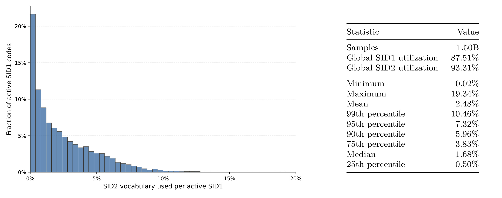
Figure 1 左侧直方图按活跃 SID1 统计其下出现过的 SID2 词表比例，分布高度集中在低值区；右侧统计表把这个长尾量化为均值 2.48%、中位数 1.68% 和最大值 19.34%。值得注意的是，“SID2 全局利用率 93.31%”与“每个 SID1 下只用 2.48%”并不矛盾：许多 SID1 各自激活不同的小子集，联合起来可以覆盖大部分词表。真正的问题是下游生成器按条件路径工作，它看到的是局部稀疏而非全局覆盖。于是第二语义层既没有在单条路径上充分使用其词表宽度，又迫使模型完成额外顺序预测。这个证据支持把语义容量从层数维度搬到单层词表宽度，但它本身还不能保证一个更大词表一定更易训练。它也没有给出每个条件子集的热度权重，因此还需要曝光感知学习判断哪些局部容量真正有价值。
1.2 静态 codebook 漂移与昂贵验证链路
只把三层压成两层仍不足以解决线上问题。工业物品集合每日变化，新物品持续加入，内容 embedding 会更新，流量分配和用户兴趣也会改变。固定历史窗口拟合出来的聚类中心会逐渐错配当前高曝光物品：即便几何上仍覆盖全部 catalog，它也可能把容量留给已不活跃区域，把热门区域挤进过载簇。直接频繁重聚类又会让 SID1 大量跳变。对生成式推荐而言，SID 是监督目标而非仅仅一个检索索引；高曝光物品一旦换码，会同时改写大量训练样本的离散标签，使 warm-start 模型突然面对不连续目标。
另一个困难是反馈周期。候选 codebook 若都走完整验证，需要重编码全量物品、重建训练目标、训练推荐器、跑离线排序，甚至再做线上实验。论文因此把问题拆成四层证据：先确认单层大 codebook 是否保留语义并缩短序列；再用曝光状态、EMA 中心和换码惩罚平衡适应与稳定；然后用重建、利用率、簇负载、完整 SID 碰撞和时序变更率做廉价筛选；最后才进入公开数据推荐指标、工业 serving 与线上 A/B。这个顺序很重要：离线 codebook 指标只能解释表示和运行状态，不能替代 Recall/NDCG，更不能替代线上消费指标。
与并行生成路线相比，这篇论文没有先允许无效 token 组合、再用图约束或扩散 beam search 恢复合法性，而是从标识结构源头减少一个语义位置。它赌的是现代大模型可以承担更大的单步词表，把原先两次条件预测合成一次；同时保留单独的去重 token，避免把“语义重建”和“物品唯一性”混在同一个超大原子 ID 中。这个选择把研究问题从“如何更快生成长 SID”改写为“多层语义残差是否真的值得一整步自回归代价，以及 codebook 如何随流量安全演化”。
2. 方法
2.1 单层大语义 codebook 与协同去重 token
论文先把每个预计算物品 embedding 归一化，再定义两 token SID。式 (1) 消除 embedding 模长影响，使后续欧氏距离与余弦几何一致；式 (2) 明确第一位是随版本变化的语义码，第二位是稳定去重码。
符号解释：$e_i$ 是物品 $i$ 的预计算 embedding，$x_i$ 是其 L2 归一化表示；$t$ 表示 codebook 版本或日期；$s_{i,\mathrm{sem}}^{(t)}$ 是由语义中心决定、可能随动态更新变化的 SID1，$s_{i,\mathrm{dis}}$ 是稳定 SID2。归一化意味着中心学习关注方向相似性，而非 embedding 的原始尺度。
原三层方案的语义部分由两级残差量化组成。第一中心解释原向量，第二中心解释残差，两中心相加形成重建：
符号解释：$c_k^{(1)}$、$c_k^{(2)}$ 是两级中心，$r_i^{(1)}$ 是第一层尚未解释的残差，$\hat{x}_i^{\mathrm{RQ}}$ 是两中心累加后的重建。第二级确实可以提高表示精度，但代价是目标序列多一个条件位置；而工业统计说明该位置在每个 SID1 下只使用小子集。
新方案把语义容量集中到大小为 $K_s$ 的一个 codebook，直接用最近中心作为重建；然后用稳定 item key 的确定性规则生成大小为 $K_d$ 的去重 token。式 (4) 与式 (5) 把两种职责彻底分开。
符号解释：$C^{(t)}=\{c_k^{(t)}\}_{k=1}^{K_s}$ 是单层大语义中心集；$m_i$ 是稳定 item key，$g$ 是固定 hash 规则。去重 token 不参与 $\hat{x}_i^{(t)}$ 的语义重建，所以 codebook 更新时只需改 SID1；只要物品 key 不变，SID2 跨版本保持不变。这避免了让一个随流量变化的语义中心同时承担永久唯一标识。
在生成端，目标因子化从三个条件因子缩成两个：
符号解释：$H$ 是用户交互历史。第一项预测大词表语义 token，第二项在语义 token 条件下预测去重 token。原三层方案还要在两者之间预测第二语义 token。核心变化不是取消协同信息，而是把“表示语义”和“解决碰撞”分别放到 SID1 与 SID2，同时把自回归步数从三步降为两步。
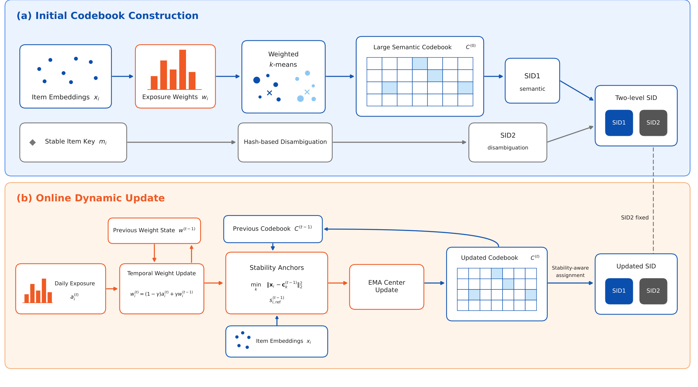
Figure 2 上半部展示初始构造：归一化 embedding 与曝光权重进入 weighted k-means，得到大语义 codebook 和 SID1；稳定 item key 单独进入 hash-based disambiguation，产生 SID2，两者拼成最终两 token SID。下半部展示每日更新：当天曝光与历史权重先形成时间权重，旧 codebook 为当前 embedding 产生稳定锚点，EMA 只更新活跃中心，最终分配还要支付换码惩罚；右侧明确写着 SID2 fixed。图里的蓝色链路负责表示，橙色链路负责随流量更新，二者在最终 SID 汇合但不共享更新状态。训练时需要重编码 SID1 并 warm-start 微调，在线生成时只消费已发布的两 token 目标。
2.2 曝光加权学习与每日动态更新
原始 PV 呈强长尾，若直接把曝光次数当权重，极少数头部物品会主导中心；若完全不加权，聚类又只反映 catalog 中“有多少物品”，不反映线上“哪些物品被看见”。论文先对当天曝光做对数压缩，再优化加权量化目标，并把该权重用于 k-means++ 的中心采样：
符号解释：$p_i^{(t)}$ 是日曝光次数，$a_i^{(t)}$ 是压缩后当天信号，$w_i$ 是聚类权重；$C_{\mathrm{sel}}$ 是初始化阶段已选中心，$D_i^2$ 是物品到最近已选中心的平方距离。式 (9) 同时偏好远离现有中心且流量更高的物品，但对数压缩防止头部 PV 线性吞噬全部概率。曝光加权因此改变的是 codebook 的服务对象：从平均 catalog 物品转向当前流量加权物品。
动态阶段不把每一天当成独立重聚类。对连续出现的物品，状态权重是历史与当天信号的指数混合；新物品直接用当天值初始化，缺席物品只衰减，低于阈值 $\varepsilon$ 后清理：
符号解释：$\gamma$ 是时间记忆系数。值越大，短时流量尖峰越不容易改写 codebook；值越小，系统更快追随当天分布，但也更容易抖动。缺席物品的 $w_i^{(t)}=\gamma w_i^{(t-1)}$ 使其影响逐日自然退出，而不是在某天突然删除。
稳定锚点不是沿用物品过去存储的旧 SID，而是用“当前 embedding + 旧 codebook”重新编码。这样比较新旧 codebook 时隔离了表征本身变化：
符号解释：$s_{i,\mathrm{ref}}^{(t-1)}$ 是目标日物品在旧中心上的参考分区。它既定义当天每个中心的成员集合，也作为最终换码惩罚的基准。若直接拿昨天 embedding 的旧 SID 比较，就会把 feature drift 与 codebook drift 混在一起。
对参考分区 $A_k^{(t)}=\{i:s_{i,\mathrm{ref}}^{(t-1)}=k\}$，先求当天曝光加权中心，再与旧中心做 EMA；没有物品的中心保持不动：
符号解释：$\bar{c}_k^{(t)}$ 是当天目标中心，$c_k^{(t)}$ 是真正发布的平滑中心，$\alpha$ 控制跟随速度。这里没有重新打乱全部簇，而是在旧分区内估计移动方向，再平滑更新中心；inactive center 保留旧值，也避免短期无流量造成空中心坍塌。
最终 SID1 分配不是只找新中心的最近邻，而是在距离之外加入曝光加权换码成本：
符号解释：$\lambda\ge0$ 是适应—稳定权衡，$\mathbb{I}(\cdot)$ 为指示函数。高曝光物品换码代价更大，只有去新中心带来的距离下降超过 $\lambda w_i^{(t)}$ 才会迁移；低曝光或新物品更容易适应新分区。如果 $\lambda$ 或 $\gamma$ 过大，系统会把“稳定”误作“正确”而冻结旧偏差；若过小，则高 PV 物品换码会批量改写监督目标，破坏 warm-start 连续性。
2.3 离线 codebook 评价与稳定性度量
为了先筛掉明显不合格的 codebook，论文定义五类离线量。第一类是重建相似度和尾部统计，第二类是每层 code 利用率：
符号解释：$E_t$ 是目标日评估物品，$N_t=|E_t|$；$\hat{x}_i$ 对单层方案是选中中心，对残差方案是两级中心之和；$q_i^{(\ell)}$ 是第 $\ell$ 层 code，$K_\ell$ 是该层容量。除均值外还报告重建 P10 与中位数，避免少数低质量物品被平均值掩盖。利用率高只能说明 code 被占用，不说明负载均衡。
第三类先把物品的完整语义组记为 $\sigma_i$，统计每个占用组的物品数：
符号解释：对新方案，$\sigma_i$ 是单个语义 code；对残差基线，它是多层语义 code 的元组。论文报告 $n_k$ 的 P95、最大值和变异系数 CV。最大值暴露最拥挤簇，CV 衡量整体不均衡；这使“利用率很高但少数簇过载”的情况无法藏在一个指标里。
第四类检查加入去重 token 后是否仍有完整 SID 碰撞，同时区分“多少已占用 SID 碰撞”与“多少物品卷入碰撞”：
符号解释：$Z$ 是已占用完整 SID 集合，$G_z$ 是被分配到 SID $z$ 的不同物品集合。若一个极大碰撞组出现，$R_{\mathrm{SID}}$ 可能仍低而 $R_{\mathrm{item}}$ 会明显上升，所以两者必须一起看。
第五类让新旧 codebook 编码同一目标日 embedding，计算等权和 PV 加权的 SID1 变化率：
符号解释：$q_i^{\mathrm{old}}$、$q_i^{\mathrm{new}}$ 是同一 $x_i$ 在旧/新 codebook 下的语义码。$R_{\mathrm{chg}}$ 衡量 catalog 级扰动，$R_{\mathrm{chg}}^{\mathrm{PV}}$ 衡量真实流量受到的扰动。两者小并不自动意味着更新有效，还要同时看重建和下游推荐是否改善。
2.4 缩短 SID 的 serving 成本模型
附录把“少一个 token”转成可审计的 decoder-core FLOPs。首先规定矩阵乘法成本，再计入每层只做一次并缓存的 cross-attention K/V 投影：
符号解释：一次乘法和一次加法各计一个 FLOP；$L$ 是 decoder 层数，$d$ 是模型宽度，$N$ 是 cross-attention context 长度。$F_{\mathrm{cross\text{-}KV}}$ 对长短 SID 都只付一次，因此不会因为少一 token 完全消失。
第 $j$ 步的 beam-expanded 成本为：
符号解释：$b_j$ 是进入第 $j$ 步的 beam 数，$h$ 是 feed-forward 宽度，$V_j$ 是该步输出词表。括号内合并 cross-attention、自注意力投影、缓存前缀注意力和两组 SwiGLU FFN；最后一项是词表投影。大词表会抬高某一步的 $V_j$ 成本，但删除整步可以消除该步的全部层计算和 beam 搜索。
对 $q$ token 与缩短后的 $q-1$ token SID，总成本分别是：
符号解释：$C_j'$ 使用缩短 SID 对应的 beam 数与词表大小，报告的 decoder-core 降幅是 $1-F_{q-1}/F_q$。因此 47.93%–48.70% 不是仅按 token 数做的简单三分之一推断，而是纳入不同 serving 日程后的估算；但它仍排除了两方案共享的外围计算。
论文把 KV-cache 移动单列，因为字节访问不是 FLOP：
符号解释：$\rho$ 是每个缓存元素的字节数，系数 2 对应 K 与 V；自注意力 cache 读取还按 $2\rho Ld\sum_j b_jj$ 缩放。这里给的是逻辑访问，不是 GPU 实测显存事务，因为 kernel tiling 与片上复用会改变物理流量。故 serving 结论必须把解析 FLOPs 与实际单卡 QPS 分开报告。
3. 实验结果
3.1 数据、模型与配对设置
公开实验使用 Amazon Reviews 2014 Beauty 5-core 与 KuaiRec 2.0 Big Matrix。Beauty 用于受控静态 S3/S2 比较；KuaiRec 有稠密时间戳观看日志，既做 leave-two-out 下 S3/S2/PV-S2 静态比较，也做固定日期的 Static C1/Dynamic C2 对照。KuaiRec 只保留 watch_ratio 不低于 1.0 且至少有五个保留事件的用户。静态 leave-two-out 把每用户最后交互作测试、倒数第二条作验证；固定日期实验则用共同日历边界，避免不同用户最后交互日期不一致。
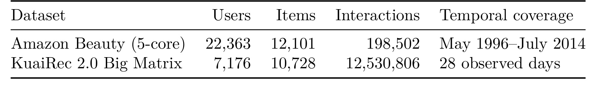
Table 1 显示 Beauty 只有 198,502 条交互，而 KuaiRec 有 12,530,806 条交互，并覆盖 28 个观测日。两者承担不同证据角色：Beauty 更像小规模受控复现，KuaiRec 才能构造暴光加权和严格不相交的时间窗口。论文在两数据集上都把 S3 设为 [256,256,256]，把 S2、PV-S2、Dynamic PV-S2 设为 [1024,512]；最后一位都是 balanced disambiguation code。推荐器包括 OneRec-V1/V2 的 0.1B–0.7B 七个名义规模，以及 TIGER、RPG、SEATER、COBRA。配对比较固定数据切分、模型结构、优化设置和 seed，只替换 SID artifact；主结果用 seed 7、42、2024 的均值与样本标准差。
3.2 Amazon Beauty：静态 S3 到 S2
在 Beauty 上，跨七个 OneRec 规模平均，S2 相对 S3 使 OneRec-V1 Recall@10 提升 5.0%、NDCG@10 提升 4.1%；OneRec-V2 对应为 8.7% 与 8.5%。作者强调每个规模的 Recall@10 都由 S2 获益。这个结果说明把两层语义残差合成一个更宽语义 token，并未因为少一次残差精修而损坏下游目标；相反，更短目标和更集中的单步容量可能更适合这些生成器。
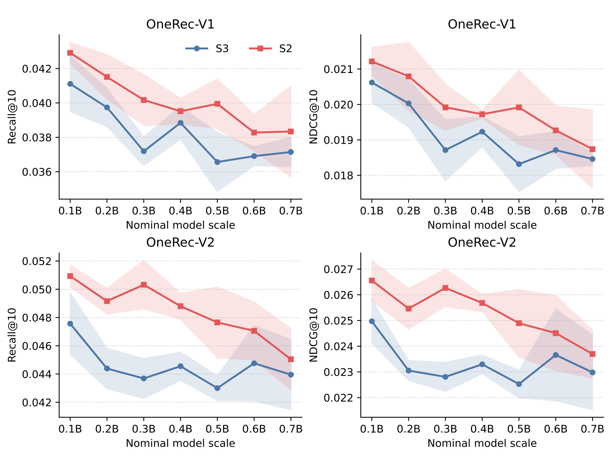
Figure 3 的四个子图分别对应 OneRec-V1/V2 的 Recall@10 和 NDCG@10。红色 S2 曲线在大部分规模点位于蓝色 S3 之上，特别是 OneRec-V2 的间隔更明显；阴影是三个 seed 的样本标准差，表明部分点虽有重叠，但整体排序具有一致性。曲线也提醒一个细节：性能并不随名义参数规模单调上升，0.3B、0.5B 等位置会波动，所以论文报告“七规模平均”而不是挑一个最优规模。因而 5.0%–8.7% 的相对提升是 OneRec 版本和指标分开的汇总，不能拼成一个统一的“最高提升”。
其他推荐器并不完全同向。SEATER 的 Recall@10 从 0.0562 升至 0.0584，RPG 从 0.0569 升至 0.0646，COBRA 从 0.0102 升至 0.0159；但 TIGER 从 0.0520 降至 0.0463，NDCG@10 也从 0.0302 降至 0.0273。这一反例说明 SID 深度与生成器结构存在耦合，不能仅凭 OneRec 结果认定两 token 对所有模型都更优。
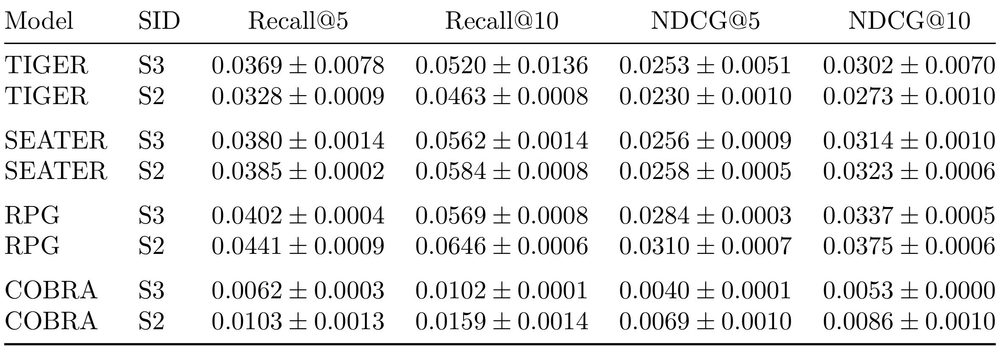
Table 2 给出三 seed 均值和样本标准差。RPG、COBRA 的 S2 收益较大，而 TIGER 的 S3 明显领先；SEATER 提升较温和。由于各模型的绝对指标差异也很大，尤其 COBRA 的数值远低于其他模型，横向比较应看同一模型内部的 SID 配对，不能把模型间绝对值当作 codebook 质量排名。表中没有显著性检验或置信区间，三个 seed 只提供有限方差估计；因此更稳妥的结论是“缩短 SID 对多种架构通常可行，但收益依赖生成器”，而不是“单层大 codebook 全面取代残差层”。尤其 TIGER 与 RPG 的反向差异说明，解码约束、树结构或并行生成方式可能改变它们对 SID 层数的偏好，这需要单独消融，并记录合法路径率与 beam 开销。
3.3 KuaiRec：静态离线质量与推荐效果
KuaiRec 静态比较先看 codebook 本身。S2 的平均重建余弦相似度最高，为 0.9962；S3 为 0.9958；曝光加权 PV-S2 降至 0.9939。所有语义层利用率仍至少 94.92%。在单层方案内部，PV-S2 把最大 semantic group 负载从 376 降至 248，CV 从 1.9938 降至 1.6390，但 P95 从 26.1 增到 34.4。这组结果不是“所有离线指标同步改善”，而是曝光目标重新分配容量后，最拥挤簇和整体不均衡下降，同时平均重建略有牺牲、典型尾部负载未必下降。
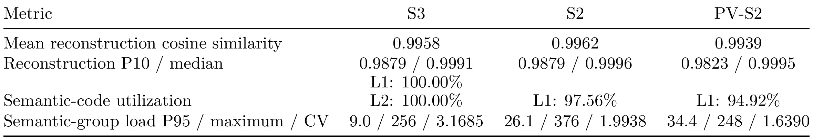
Table 3 把三个互相不能替代的维度放在一起。S3 的两语义层利用率都达到 100%，却有最高 CV 3.1685；S2 的重建最佳，却有最大单簇 376；PV-S2 把最大负载压到 248 和最低 CV，但平均重建只有 0.9939。若只优化重建就会选 S2，若更关心流量均衡可能选 PV-S2。论文的离线框架价值正在于让这个取舍可见，而不是创造一个合并分数。公开表没有展示完整 SID collision 与时间稳定性数值，所以这些指标的工业筛选作用主要由后续固定日期和七日实验补充。
在推荐指标上，跨七个 OneRec-V1 规模，S2/PV-S2 相对 S3 的 Recall@10 平均提升 8.8%/7.0%，NDCG@10 提升 5.1%/4.8%；OneRec-V2 的 Recall@10 提升 7.1%/6.9%，NDCG@10 提升 3.8%/4.8%。两种两层方案都整体优于 S3，但 S2 与 PV-S2 没有稳定支配关系。
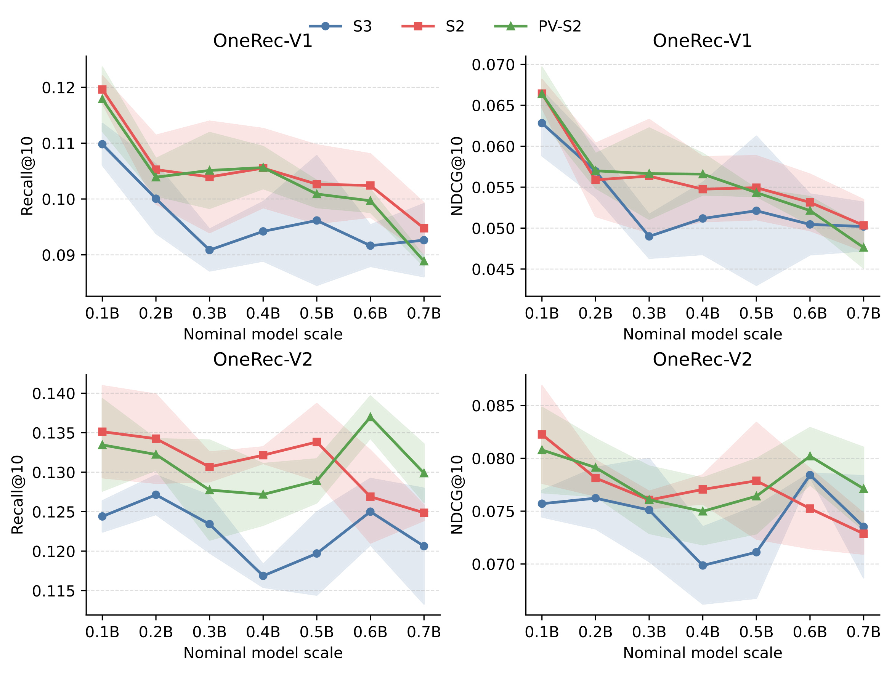
Figure 4 中红色 S2 与绿色 PV-S2 大多高于蓝色 S3，但红绿两线随规模和指标交叉。OneRec-V2 Recall@10 在 0.6B 附近 PV-S2 明显突出，而在部分其他点 S2 更好；NDCG 曲线也没有统一赢家。误差带在若干规模上相当宽，说明三个 seed 下的模型训练噪声不可忽视。于是曝光加权的离线负载改善并不保证每个下游配置都得到更高排名指标，这恰好验证作者把 codebook 诊断与最终推荐训练分层的必要性。
非 OneRec 模型上，S2 或 PV-S2 对四个模型的 Recall@10 都超过 S3。TIGER 的最高 Recall@10 是 PV-S2 的 0.1492，SEATER 为 0.1478，RPG 从 S3 的 0.0082 提升到 PV-S2 的 0.0172，COBRA 为 0.1486。但指标偏好并非总一致，例如 TIGER 的 NDCG@10 最高是 S2 的 0.0886，而不是 PV-S2。
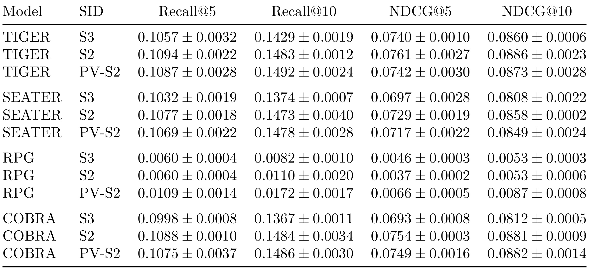
Table 4 的价值是把“PV 加权改善哪一类目标”具体化。RPG 的 PV-S2 收益非常大，可能说明原模型更受簇负载或流量错配影响；TIGER、SEATER、COBRA 的 Recall@10 最佳也由 PV-S2 取得，但 NDCG@5/10 常由 S2 领先或几乎持平。这意味着 PV 权重可能更有利于把正确物品送入 top-10，却不必然优化 top-5 的相对顺序。论文没有给出用户分层或 head/tail 物品切片，因此不能进一步证明收益主要来自热门物品还是长尾重排。表中 RPG 的绝对值和其他模型不在同一量级，也表明不应将“相对翻倍”与高质量绝对排名混为一个故事。这类收益还应结合原始基线强弱、候选集容量和排名位置判断实用性。
3.4 固定日期的动态更新
leave-two-out 的用户末次行为分散在不同日期，无法给 codebook 更新、训练和测试划出共同时间边界。固定日期实验用第一阶段 7 月 12 日至 8 月 8 日拟合静态 C1；静态臂用 C1 编码 7 月 12 日至 9 月 3 日目标，动态臂用 8 月 9 日至 9 月 3 日流量把 C1 更新为 C2，并从匹配的静态 checkpoint 在 C2 目标上 warm-start 微调。两臂都用 9 月 4 日首个正交互验证、9 月 5 日首个正交互测试，且这两天不参与 codebook 拟合。
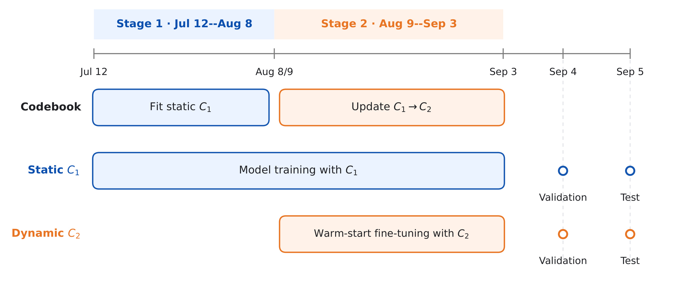
Figure 5 把两臂的差异限制在 codebook 更新及其后目标编码：Static C1 从头到尾使用 C1，Dynamic C2 在 Stage 2 更新中心并 warm-start；验证和测试节点位于 Sep 3 之后，分别落在 Sep 4、Sep 5。这个设计比 leave-two-out 更适合讨论 temporal adaptation，因为所有用户共享同一截止日。不过动态臂不仅换了 codebook，还多了匹配 checkpoint 上的第二阶段微调，所以结果证明的是“动态 codebook + 相应 warm-start 训练流程”整体有效，不能把全部增益仅归因于式 (14) 的换码惩罚。
跨七个规模平均，Dynamic C2 相对 Static C1 使 OneRec-V1 Recall@10 提升 1.4%、NDCG@10 提升 7.0%；OneRec-V2 两项都提升 2.7%。新旧 codebook 只让 10,728 个物品中的 46 个改变 SID1，item 级变化率 0.4288%，第二阶段活跃物品变化率 0.6418%，PV 加权变化率 0.4383%；中心平均位移 0.004054，最大位移 0.050005。也就是说，收益发生在非常有限的分区改动下，符合“稳定但有选择地适应”的设计目标。
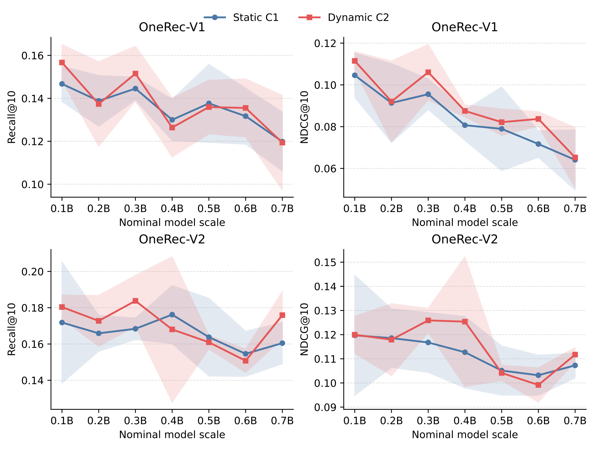
Figure 6 同时给出平均收益背后的非一致性：Dynamic C2 并非在每个模型规模、每个指标上都高于 Static C1。例如某些 0.2B、0.4B 或更大规模点的红蓝曲线交叉，且 OneRec-V2 在 0.4B 附近方差较大。NDCG 的平均提升比 Recall 更显著，尤其 OneRec-V1 为 7.0%，可能意味着动态编码更改善前排次序而非仅扩大候选覆盖；但论文没有 item 切片或用户切片，不能确定是哪类流量产生这一区别。曲线支持“总体正向且换码很少”，不支持“动态更新逐配置单调获益”。
其他模型中，Dynamic C2 的 SEATER Recall@10 平均提升 5.7%，RPG 提升 2.8%；论文认为 OneRec 两版、SEATER、RPG 的聚合结果为正。COBRA 也从 0.1116 提升到 0.1242。TIGER 的动态均值看似大幅上升，但标准差异常高，不能按均值直接宣称稳定收益。
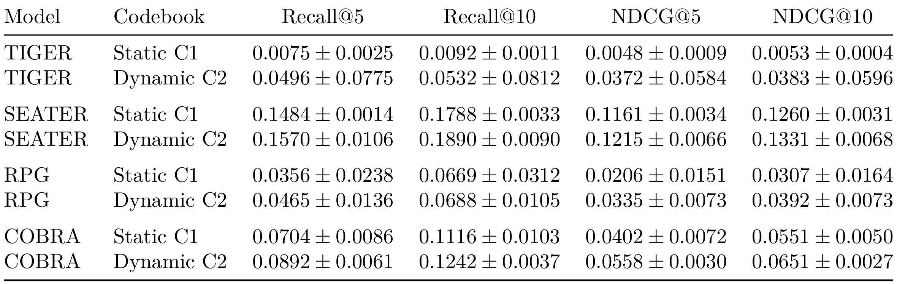
Table 5 最醒目的风险是 TIGER：Dynamic C2 Recall@10 为 0.0532±0.0812，标准差超过均值；Recall@5、NDCG 也有类似现象，说明三次训练中至少存在强烈不稳定。相比之下，SEATER 与 COBRA 的均值增益和方差更可解释，RPG 虽提升但原始方差仍不小。表格因此要求把“completed three-seed comparisons”看成小样本估计，而不是线上稳定性证明。论文没有补充显著性检验、失败 seed 诊断或动态超参数敏感性，复现时应优先追查这些方差来源。如果不拆开每个 seed 的收敛过程、生成合法率与稀有物品命中，就无法确定高方差来自优化失败、SID 分配或评价样本太少。
3.5 工业 codebook、三类 serving 与线上 A/B
工业 codebook 在连续七个日快照上比较。静态 S3 的第一语义层重建从 0.758357 降到 0.754451，两语义层累积重建从 0.802241 降到 0.798868；Static S2 从 0.805676 降到 0.800899；Static PV-S2 从 0.821336 降到 0.814508。Dynamic PV-S2 与静态版本从同一 Day 1 起点出发，却在 Day 7 升至 0.826723，作者据此报告相对 Static PV-S2 约 1.50% 的改善。
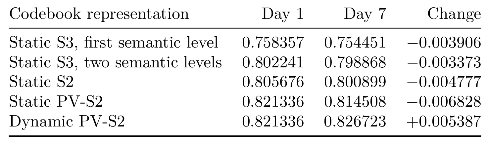
Table 6 的对照强在共享初始化：Static PV-S2 与 Dynamic PV-S2 的 Day 1 都是 0.821336，前者七天后下降 0.006828，后者上升 0.005387。它支持每日更新能追随工业 embedding/流量漂移，而非单纯从更好起点开始。但表里只有首尾均值，没有每日波动、P10、利用率、碰撞、换码率或用户侧指标，因此不能判断改善是否平滑，也不能排除某些天或低曝光物品退化。其证据等级是 codebook representation，而不是最终推荐质量。
serving 评价覆盖普通 decoder、LazyAR 与 MTP 三类架构。由式 (20)–(24) 估算，三层到两层使自回归 decoder-core FLOPs 下降 47.93%–48.70%；单卡 QPS 实测分别提升 47.0%、28.57%、33.3%。三类 QPS 增幅不同，说明 LazyAR/MTP 已经通过其他机制减少顺序成本，删除一个 SID 位置的边际收益低于普通 decoder。FLOPs 是包含一次 cross-attention K/V 投影、beam-expanded decoder 和词表投影的解析估算，QPS 才是系统实测；论文没有披露卡型、batch、延迟分位和绝对吞吐，因而这些百分比只能在指定部署配置内成立。
线上 A/B 持续五天，实验组承载 2.5% 生产流量，相对已部署三层 SID 基线使“主消费指标”提升 0.792%。这是论文从表示到用户行为的最后一层证据，也说明两 token 方案不只节省计算。但主指标名称、绝对基线、置信区间、用户/内容切片、流量分配细节和 guardrail 均未披露；五天也不足以观察长期兴趣反馈、冷启动物品累积和多次 codebook 更新后的稳定性。应把 +0.792% 写成一个有限窗口的线上观测，而不是长期因果保证。
4. 总结
4.1 核心判断与工程启发
这项工作的主线很完整：先用 15 亿样本证明第二语义层条件稀疏，再把多层残差语义压成单层大词表，把协同去重保留为独立稳定 token；随后用曝光衰减、旧分区锚点、EMA 中心与 PV 加权换码惩罚处理线上漂移；最后依次验证公开数据离线排名、工业 codebook、三类 serving 和小流量线上效果。最可迁移的不是某个固定 codebook 大小，而是“语义职责、唯一性职责、时序稳定职责分离”的系统边界。对生成式召回，SID 长度应该和条件有效容量一起评估；对个性化大模型/RAG 索引，离散 key 更新也应区分表示漂移与稳定引用。
工程上可以先部署论文的 codebook-level diagnostics，不必立刻替换生成器：每日记录重建均值/P10、中位数、利用率、P95/最大负载、CV、完整 SID collision、item/PV 变更率；只有指标通过阈值的候选才重编码训练集并 warm-start。上线时还要把解析 FLOPs、真实 QPS、P95/P99 latency、显存带宽和质量 guardrail 放在同一 dashboard，避免用一个百分比代表整个 serving 面。
4.2 局限、风险与后续跟进
局限至少有五点。第一，公开数据只覆盖 Beauty 与 KuaiRec，两者规模、行为类型和时间跨度有限，不能代表电商搜索、广告或长周期内容分发。第二，动态流程的 $\gamma,\alpha,\lambda,\varepsilon$ 敏感性、更新失败恢复和 codebook 版本回滚没有系统展示，稳定—适应权衡仍需复现。第三，三 seed 结果存在明显高方差，尤其 TIGER 动态臂，论文没有显著性检验或失败运行诊断。第四，serving 只给相对 FLOPs/QPS，缺少硬件、batch、绝对吞吐、延迟分位、功耗与显存事务，跨环境外推受限。第五，线上 A/B 只有五天、2.5% 流量和匿名主指标，未披露置信区间、guardrail、用户分层及多轮更新后的长期效应。
后续建议三组。其一，按式 (10)–(14) 做参数网格与压力测试：分别制造热门突发、新品洪峰和 embedding 整体旋转，画出重建、PV 变更率、训练 loss 跳变和线上代理指标的 Pareto 前沿。其二，补做 head/mid/tail 物品与新老用户切片，并在 OneRec、TIGER 等生成器上分析何时 S3 仍优于 S2，以找到结构耦合而非只看均值。其三，等待或推动代码、codebook 构建细节和 serving 配置公开；在复现中同步记录绝对 QPS、P99 latency、cache bytes、碰撞率和 warm-start 收敛步数，确认短 SID 的系统收益没有通过更大单步词表或训练成本转移到其他环节。